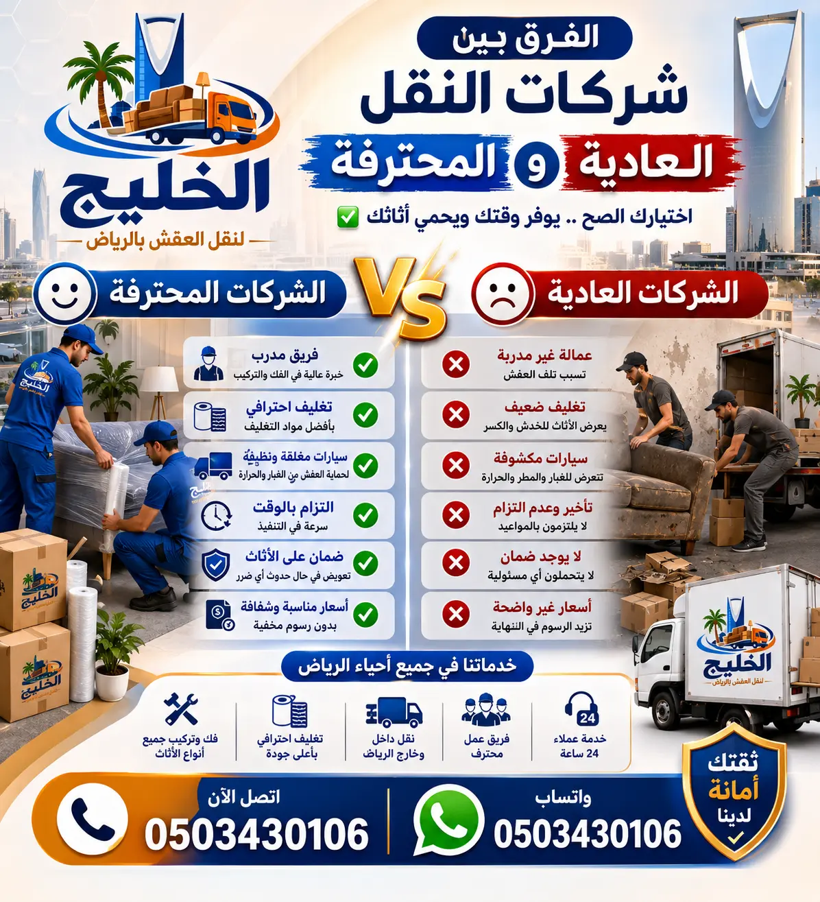

اكتشف لماذا شركة نقل عفش الرياض المحترفة تختلف عن العادية، وكيف يمكنك اختيار الأفضل لضمان سلامة أثاثك مع شركة الخليج لنقل العفش والمكيفات.
عند التفكير في نقل العفش في الرياض، يتبادر إلى الذهن سؤال مهم: هل أختار شركة نقل عادية أم محترفة؟ الفرق شاسع، ليس فقط في السعر، بل في جودة الخدمة، سلامة الأثاث، وراحة البال. نقل عفش الرياض ليس مجرد تحميل وتفريغ، بل هو عملية متكاملة تتطلب خبرة ومعدات ومواد حماية. الشركات المحترفة مثل شركة الخليج لنقل العفش تقدم خدمات شاملة تضمن وصول أثاثك كما هو دون أي أضرار. في هذا المقال، سنستعرض بالتفصيل الفروقات بين النوعين، لنساعدك في اتخاذ القرار الصائب.
العديد من الأشخاص يقعون في فخ اختيار شركات غير محترفة بسبب السعر المنخفض، ليكتشفوا لاحقاً أن أثاثهم تعرض للخدوش أو الكسر. شركة نقل اثاث الرياض المحترفة تستثمر في تدريب العمالة، وتوفير سيارات مجهزة، واستخدام أفضل مواد التغليف. هذا المقال هو دليلك الشامل لفهم الفروقات، ولماذا تعتبر افضل شركة نقل اثاث الرياض هي الخيار الأمثل لعملية نقل ناجحة.

أحد أهم الفروقات بين طرق التغليف في شركات النقل العادية والمحترفة هو جودة المواد المستخدمة. الشركات العادية غالباً ما تستخدم بطاطين عادية أو أغطية بلاستيكية رقيقة، مما يعرض الأثاث للخدوش والغبار والرطوبة. أما الشركات المحترفة مثل شركة نقل عفش الرياض فتعتمد على أحدث مواد تغليف العفش مثل الفوم الرغوي، البلاستيك الفقاعي، والكرتون المضلع عالي التحمل. هذه المواد توفر حماية فائقة ضد الصدمات أثناء النقل.
التغليف الاحترافي لا يقتصر على الأثاث الكبير، بل يشمل الزجاج والمرايا والأجهزة الإلكترونية. على سبيل المثال، تقوم نقل اثاث الرياض بتغليف كل قطعة على حدة، مع وضع طبقات إضافية من الفوم حول الزوايا والأجزاء الحساسة. هذا يضمن عدم تحرك القطع داخل السيارة. حماية العفش أثناء النقل هي أولوية قصوى، والفرق بين شركة عادية ومحترفة يظهر بوضوح في حالة الأثاث بعد الوصول. اختر افضل شركة نقل اثاث الرياض لتحصل على تغليف لا مثيل له.
خدمة فك وتركيب الأثاث في الرياض هي من أبرز المزايا التي تقدمها الشركات المحترفة. بينما تكتفي الشركات العادية بنقل الأثاث كما هو، مما قد يسبب صعوبات في المرور من الأبواب والممرات، تقوم الشركات المحترفة بفك الأثاث إلى أجزاء صغيرة، وترقيم كل جزء، وتغليفه بشكل منفصل. بعد الوصول، يعاد التركيب بدقة في الأماكن المحددة من قبل العميل.
على سبيل المثال، فك وتركيب غرف النوم يتطلب خبرة في التعامل مع المسامير والأجزاء الخشبية، وهذا ما توفره شركة نقل اثاث الرياض المحترفة. أما الشركات العادية فقد تسبب تلفاً في الأثاث أثناء الفك أو التركيب بسبب عدم استخدام الأدوات المناسبة. الفرق واضح: الاحترافية تعني تركيب الأثاث كما كان تماماً، بل وأفضل بفضل التنظيم المحترف. فك وتركيب احترافي يضمن طول عمر أثاثك.
الفرق بين دينا نقل عفش مجهزة وشاحنات النقل العادية هو فرق شاسع. الشركات المحترفة تمتلك أسطولاً من السيارات المجهزة بأنظمة تثبيت حديثة، وجوانب مبطنة، وأحزمة أمان، ونظام تعليق هوائي لتقليل الاهتزازات. أما الشركات العادية فغالباً ما تستخدم شاحنات مكشوفة أو غير مجهزة، مما يعرض الأثاث للعوامل الجوية والصدمات.
نقل عفش بالرياض مع شركة محترفة يعني أن سياراتها مصممة خصيصاً لنقل الأثاث، مع مراعاة أحجام مختلفة تتناسب مع الشقق والفلل. كما توفر الشركات المحترفة ونش رفع للأدوار العالية، وهو أمر نادر في الشركات العادية. إذا كنت تبحث عن نقل اثاث بالرياض بأمان، فإن اختيار شركة بمعدات حديثة هو الخطوة الأولى.
العمالة هي العنصر الأهم في عملية النقل. الشركات المحترفة تستثمر في تدريب عمالها على أحدث طرق التغليف، الفك، التركيب، والتعامل مع الأثاث الحساس. كما أن لديها خبرة في التعامل مع جميع أنواع الأثاث من ايكيا، ساكو، والأثاث الفاخر. أما الشركات العادية فغالباً ما تستخدم عمالة غير مدربة، مما يزيد من احتمالية حدوث أضرار.
افضل شركة نقل عفش بالرياض توفر عمالة مدربة على أعلى مستوى، ولديها القدرة على تنفيذ المهام بسرعة ودقة. على سبيل المثال، فك وتركيب أثاث ايكيا يتطلب خبرة خاصة، وهو ما توفره الشركات المحترفة. العمالة المدربة هي الضمان الأول لسلامة أثاثك، وهذا ما يميز نقل عفش الرياض الاحترافي عن غيره.
أحد أهم الفروقات بين النوعين هو الضمان ضد الكسر والتلف. الشركات المحترفة تقدم ضماناً كتابياً على سلامة الأثاث، وتتحمل المسؤولية الكاملة في حال حدوث أي ضرر. أما الشركات العادية فغالباً لا تقدم أي ضمان، مما يعني أنك تتحمل وحدك تكاليف الإصلاح أو الاستبدال.
نقل اثاث الرياض مع ضمان شامل هو ما توفره شركة الخليج، حيث نضمن وصول أثاثك بحالة ممتازة. هذا الضمان يمنحك راحة بال لا يمكن الحصول عليها مع الشركات العادية. عند اختيارك شركة نقل عفش الرياض المحترفة، فأنت تختار الأمان والثقة.
الالتزام بالمواعيد هو سمة أساسية للشركات المحترفة. فهي تخطط لعملية النقل بدقة، وتلتزم بالجدول الزمني المتفق عليه. أما الشركات العادية فغالباً ما تتأخر بسبب سوء التخطيط أو الأعطال المفاجئة.
نقل عفش بالرياض مع شركة الخليج يعني وصول الفريق في الوقت المحدد، وإنجاز العمل في الإطار الزمني المتفق عليه. نحن ندرك أن وقتك ثمين، ولهذا نحرص على الدقة في المواعيد. هذا الالتزام هو ما يجعلنا افضل شركة نقل اثاث الرياض من حيث الموثوقية.
قد تكون أسعار الشركات العادية أقل، ولكن التكلفة الحقيقية تظهر في الأضرار التي قد تلحق بالأثاث. الشركات المحترفة مثل شركة نقل عفش الرياض تقدم قيمة حقيقية مقابل السعر، حيث تشمل الخدمة التغليف، الفك، التركيب، الضمان، والسرعة.
أرخص شركة نقل عفش بالرياض قد تكون مغريّة، ولكن الأفضل هو البحث عن شركة نقل عفش رخيصة وجودة عالية. الاستثمار في خدمة احترافية يوفر عليك تكاليف الإصلاح واستبدال الأثاث التالف. احصل على عرض سعر من شركة الخليج وقارن بنفسك.
الشركات المحترفة تقدم خدمات إضافية مثل تخزين الأثاث، تخزين العفش في الرياض، وشحن العفش بين المدن. كما تقدم نقل المكيفات مع الفك والتركيب، وهي خدمات نادراً ما تجدها في الشركات العادية.
نقل اثاث الرياض مع شركة الخليج يعني الحصول على حل متكامل، بدءاً من التغليف وصولاً إلى التخزين أو الشحن. هذه الخدمات الإضافية توفر عليك عناء التعامل مع جهات متعددة، وتضمن استمرارية الخدمة بنفس المستوى من الجودة.
الشركات المحترفة تقدم خدمة على مدار الساعة، وتستجيب للطلبات الطارئة في أي وقت. أما الشركات العادية فغالباً ما تعمل بساعات محدودة، ولا توفر مرونة في التعامل مع الحالات العاجلة.
نقل عفش الرياض مع شركة الخليج يعني توفر الفريق 24 ساعة طوال أيام الأسبوع، بما في ذلك الإجازات. نحن نتفهم أن الظروف الطارئة لا تنتظر، ولهذا نقدم حلاً سريعاً وفعالاً في أي وقت.
الشركات المحترفة تمتلك سمعة جيدة وتقييمات إيجابية من العملاء السابقين. يمكنك قراءة تجارب العملاء مع أفضل شركات نقل العفش لتكوين فكرة واضحة عن جودة الخدمة. أما الشركات العادية فغالباً ما يكون لها سمعة سيئة أو غير معروفة.
أفضل شركة نقل عفش بالرياض هي التي تحظى بثقة العملاء وتوصياتهم. شركة الخليج تفخر بسمعتها الممتازة، والتي تعكس التزامها بتقديم خدمة لا مثيل لها.
نقل مكاتب الشركات يتطلب تخطيطاً دقيقاً وسرعة في التنفيذ لتقليل وقت التوقف عن العمل. الشركات المحترفة مثل شركة نقل مكاتب بالرياض تقدم خططاً شاملة تشمل نقل الأجهزة، الوثائق، والأثاث المكتبي بأمان. أما الشركات العادية فقد تفتقر إلى الخبرة في هذا المجال.
نقل اثاث الرياض للمكاتب يتطلب عمالة مدربة ومعدات خاصة، وهو ما توفره شركة الخليج. نحن نعمل خارج أوقات الدوام لضمان عدم تأثر سير العمل، ونقدم خدمة سريعة وفعالة.
نقل العفش بين المدن يتطلب شاحنات مجهزة للحفاظ على الأثاث أثناء السفر الطويل. الشركات المحترفة توفر نقل عفش بين المدن مع أنظمة تبريد وتهوية، وتأمين إضافي. أما الشركات العادية فقد تستخدم شاحنات غير مناسبة، مما يعرض الأثاث للتلف.
نقل عفش الرياض إلى جدة، الدمام، أو أي مدينة أخرى هو خدمة متاحة لدى شركة الخليج، حيث نضمن وصول عفشك بأمان. نحن نتعامل مع جميع إجراءات الشحن ونتابع الشحنة حتى الوصول.
إذا كنت بحاجة إلى تخزين أثاثك لفترة، فإن الشركات المحترفة توفر مستودعات تخزين في الرياض مجهزة بأنظمة مراقبة ورطوبة ثابتة. أما الشركات العادية فلا توفر هذه الخدمة غالباً.
تخزين الأثاث في الرياض مع شركة الخليج يضمن لك حفظ أثاثك في بيئة آمنة، مع إمكانية استرجاعه في أي وقت. هذه خدمة مثالية للمسافرين أو من يقومون بتجديد منازلهم.
الأثاث الفاخر والكلاسيكي يحتاج إلى عناية خاصة، وهذا ما توفره الشركات المحترفة. فهي تمتلك الخبرة في التعامل مع القطع الفنية، الأنتيكات، والأثاث ذو القيمة العالية. أما الشركات العادية فقد تتعامل مع هذه القطع بخشونة، مما يؤدي إلى أضرار لا يمكن إصلاحها.
نقل أثاث الفلل والقصور يتطلب دقة واحترافية، وهو ما توفره شركة الخليج. نحن نضمن وصول أثاثك الفاخر بحالة ممتازة، بفضل التغليف الخاص والتعامل الحرفي.
بعد استعراض الفروقات، نقدم لك نصائح قبل نقل العفش لاختيار الشركة المناسبة. ابحث عن شركة تقدم خدمات متكاملة (تغليف، فك، تركيب، ضمان)، ولديها سيارات مجهزة وعمالة مدربة. تحقق من التقييمات والسمعة، واطلب عرض سعر مفصل.
افضل شركة نقل اثاث الرياض هي شركة الخليج لنقل العفش، حيث نقدم كل ما ذكرناه سابقاً. اتصل بنا اليوم للحصول على عرض سعر مجاني، وتأكد من أن أثاثك في أيدٍ أمينة. لا تتردد في زيارة دليل أحياء الرياض لمعرفة مناطق تغطيتنا.
قارن بنفسك بين خدمات شركات النقل العادية والمحترفة لتتخذ القرار الصحيح.
| العنصر | النقل العادي | النقل الاحترافي (الخليج) |
|---|---|---|
| التغليف | بطاطين عادية أو بلاستيك رقيق | فوم، بلاستيك فقاعي، كرتون مقوى، بطاطين سميكة |
| الفك والتركيب | بدون فك أو فك غير احترافي | فك وتركيب مدروس مع ترقيم القطع |
| المعدات | شاحنات عادية أو مكشوفة | دينات مجهزة بأنظمة تثبيت وونش رفع |
| العمالة | غير مدربة أو قليلة الخبرة | مدربة على أعلى مستوى |
| الضمان | لا يوجد ضمان | ضمان كتابي ضد الكسر والتلف |
| الالتزام بالمواعيد | متأخر أو غير دقيق | دقيق والتزام بالجدول |
| الخدمات الإضافية | غير متوفرة | تخزين، شحن، نقل مكيفات |
| التوفر | ساعات محدودة | 24 ساعة طوال الأسبوع |
| التقييم | تقييمات منخفضة | ★★★★★ (4.9/5) |
اختر الاحترافية مع شركة الخليج لنقل العفش لضمان نقل آمن ومريح.
نفخر بتغطية شاملة لجميع أحياء الرياض وضواحيها، بالإضافة إلى المدن المجاورة. فريقنا موجود في كل مكان لنقدم لك نقل عفش احترافي مع ضمان السرعة والجودة. اختر حيك من القائمة التالية:
إذا كان حيك غير مدرج، لا تقلق – نحن نخدم جميع أحياء الرياض والمدن القريبة. اتصل بنا وسنصل إليك أينما كنت.
اختيار شركة نقل عفش الرياض المحترفة يضمن لك تجربة نقل سلسة وآمنة. مع شركة الخليج لنقل العفش، احصل على سرعة، أمان، وأسعار لا تقارن.
اتصل بنا الآن : 0503430106